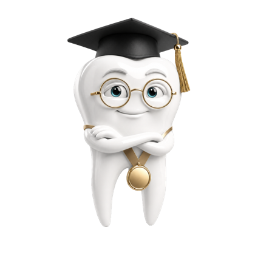

Dentalingo
DentalingoSupport
Contact us
Email hello@laborsam.com — a real person reads every message. We aim to reply within 3 business days.
To get a useful answer fastest, include:
- your iPhone model and iOS version (Settings → General → About);
- the app version (Profile tab, bottom of the screen);
- what you expected to happen and what happened instead;
- a screenshot, if the problem is something you can see.
Common questions
What exams does Dentalingo prepare me for?
Dentalingo covers the three components of the dental assisting certification exam: Radiation Health & Safety (RHS), Infection Control (ICE) and General Chairside (GC). Questions are written against each component's published content outline. Dentalingo is an independent study aid — it is not affiliated with or endorsed by DANB, and it does not contain real exam questions.
Will Dentalingo guarantee I pass?
No, and be wary of any study app that says otherwise. Dentalingo gives you practice questions, an illustrated atlas and timed mock exams. Your mock exam score is not a predicted exam score and is not comparable to an official scaled score. Always check current exam requirements, eligibility pathways and content outlines with the certifying board directly.
What do I get for free, and what costs money?
You get 6 free questions — six in total, once, for as long as the app is installed. They are not per day and they do not reset. The paywall shows how many you have left.
Full access is a subscription called Dentalingo Study Camp, sold in three lengths: 1 month, 3 months and 6 months. Longer camps cost less per month. The current price for your country is shown in the app before you confirm anything — we do not list prices here because they differ by App Store country and can change.
There is no free trial period. The 6 free questions are the trial.
How does the subscription renew?
Payment is charged to your Apple Account when you confirm the purchase. The camp then renews automatically for the same length unless you turn auto-renew off at least 24 hours before the current period ends. Apple charges the renewal within the 24 hours before a period ends.
All three lengths sit in one subscription group, so you hold at most one at a time. Switching between them is an upgrade or downgrade handled by Apple, which also works out any proration.
How do I cancel?
On your iPhone: Settings → your name → Subscriptions → Dentalingo → Cancel Subscription. Cancelling is done through Apple, not through us, and we cannot cancel a subscription on your behalf.
Cancelling stops future renewals. You keep full access until the end of the period you already paid for — cancelling does not cut you off immediately, and it does not refund the unused part of the current period.
I bought RHS, ICE or GC as a one-time purchase before. Is it still valid?
Yes. Those one-time unlocks are no longer sold, but every one already issued is still honoured — the app keeps recognising it, and you do not need a subscription to use what you bought. Tap Restore Purchases if it does not appear after a reinstall.
I subscribed on another device. How do I get access here?
Sign in with the same Apple Account and open the paywall — an active subscription is account-wide and usually appears on its own. If it does not, tap Restore Purchases. The button always reports what it found, so it will tell you plainly if there is nothing to restore.
Purchases are tied to the Apple Account, not to the device, so a new iPhone or a reinstall recovers access at no extra cost. If a restore still comes up empty, email us with the purchase date and we will help.
How do I get a refund?
All payments are processed by Apple, so refunds are handled by Apple and not by us. Request one at reportaproblem.apple.com using the Apple Account that paid. We cannot issue refunds directly, and cancelling a subscription on its own does not produce a refund for the current period. Tell us what went wrong either way — if it is a bug on our side, we want to fix it.
How do I turn study reminders on or off?
In the app: Profile tab → notification settings. On the device: Settings → Notifications → Dentalingo. Reminders are scheduled locally on your iPhone; the app works fully with notifications switched off.
Does Dentalingo work offline?
Yes — completely. All questions, images and atlas content ship inside the app and the app makes no network requests. You can study on a plane or in a basement with no signal.
Which devices are supported?
iPhone running iOS 17.0 or later, in portrait orientation.
My streak disappeared / my progress looks wrong.
Streaks are counted in your device's local time zone, so travelling across time zones can shift when a day rolls over. If progress still looks wrong, email us with a screenshot before deleting anything — once the app is deleted the data is gone for good and we cannot recover it, because we never had a copy.
How do I delete my data?
Delete the app from your iPhone. iOS removes its storage container and every piece of learning progress with it. There is no account to close and no server-side copy to request deletion of — see the Privacy Policy. Your purchases stay with your Apple Account and can be restored later.
I found a mistake in a question or an image credit.
Please tell us — hello@laborsam.com. Content corrections are taken seriously and shipped in the next update. If you are a rights holder with a concern about an image credit, see Credits & Licences and contact us; we will correct or remove it promptly.
